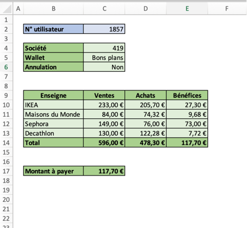

Enregistrer une macro à la main pour faire en sorte que la ligne de la case sélectionnée soit supprimée. Y associer le raccourci CTRL + M.
Modifier la macro générée pour que la ligne sélectionnée soit déplacée dans l’onglet « Lignes sélectionnées », à la fin du tableau, avant d’être supprimée.
Exercice 2
Écrire une macro qui écrit dans l’onglet « Commande » la commande d’un utilisateur, comme ceci :

Spécifications :
La macro demandera le numéro utilisateur via un inputbox (ici, nous avons saisi 1857. Il permettra de chercher les autres données grâce à la colonne Q du document de données).
En C2, il s’agit du numéro utilisateur saisi.
En C4, du numéro de société associé. (Colonne R du document de données)
En C5, le nom du Wallet associé à la commande. (Colonne N du document de données)
En C6, « Oui » ou « Non », en fonction de si la commande a été annulée ou non. (Information en colonne E du document de données)
Dans le tableau à partir de B9, les enseignes auprès desquelles l’utilisateur a passé la commande, avec le montant des ventes TTC et le prix d’achat TTC.
(Données de ventes TTC en colonne F du document de données, et données des achats TTC en colonne H)
2 lignes après le tableau (ici C17), le montant total à payer.